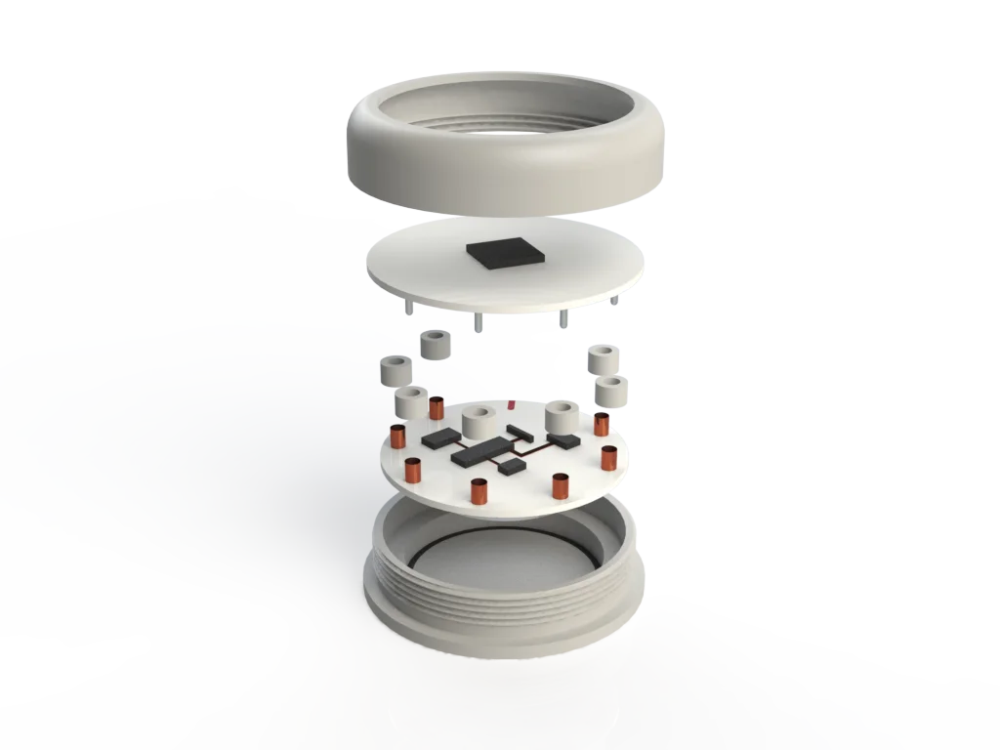
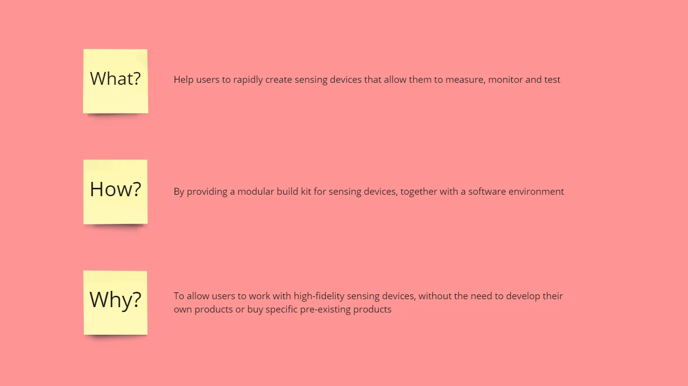

Personal development
Vision/
Technology is continuously advancing and innovating. This is generally a good thing as the average quality of life has drastically through this. As technological advancement is neutral of itself, I believe that guiding innovation is a major role of current and future designers. Generating a positive, preferably big, impact on society is therefore one of my main ambitions. To be able to guide the technological development the designer needs in-depth knowledge of their chosen field of technology.
Even though innovation is often not as black and white as having a positive or negative effect, I believe that designers can increase the generated value and minimize negative effects, through a user-centered design process and a dedication to quality. To generate value, you need to know who you innovate for and what their needs are, and thus users should constantly be taken into account. Furthermore, they should be included in the processes early and often, to verify inevitable assumptions. This is why the designer should have firm grasp on user involvement.
A key enabling factor for impactful design is a critical mindset and holistic view. This allows the designer to take a broader perspective and critically reflect on the design, while weighing the options. However, in order to be able to provide a holistic and critical view, the designer needs to be knowledgeable about the variety of subjects. Therefore, it is important that designers have an understanding of multiple disciplines, like engineering, business and user research. This is will also allow the designer to apply their knowledge and collaborate within a multidisciplinary team.
Professional identity/
As stated in my vision: I believe that designer shave the important role of guiding technological advancements. Doing this in a structured and user-centered manner will aid in value generation for users and stakeholders. To maximize the value I can create, I focus on an area that is both closest to my interests and my skillset: physical electronic products.
I believe it is important for me to gain a deep understanding of engineering physical products to be able to effectively work with the technology, understand it and to be able to communicate effectively with experts on this subject. This specialization is one of my strengths as a designer, further solidified by my inherent curiosity regarding the subject.
Furthermore, to be able to involve users into the design process I have gained skills to be able to conduct various types of user research as well as knowledge about working with users. This specialization allows me to match envisioned value to verified user needs and wishes.
Because of these skills I prefer to focus on the concept development and evaluation stage of the design process. This is also where my strengths shine; through user evaluation with high-fidelity prototypes and can provide valuable insights to steer the future direction of projects. This is also why I see myself as the realizer within a team, transforming potent ideas into actionable concepts.
I furthermore see myself as a team-player, as I prefer to work within multidisciplinary teams. This allows me to use the knowledge of experts in different areas and through a critical and holistic view make substantiated decisions within the design process. This is also why I see myself as an analyst, being able to see the bigger picture and extract the high-level insights, through critical reflection. This allows me to uphold a dedication to quality.
Just as knowledge about technology is needed to collaborate with technology experts, multidisciplinary knowledge is needed for effectively working within multidisciplinary teams. This is why I developed myself broadly. I see myself as a T-shaped designer, having broad knowledge of a variety of subjects, while having deep knowledge regarding users and technology. This is further supported by my flexible and curious attitude.
Lastly, time and resources are always limited. To ensure that these are used to the fullest potential I try to work efficiently and effectively. This is done through choosing the right approach fitting for the goal of the activity, such as a quick exploration versus an in-depth study. Furthermore, through an interest in project management and the use of various methods, methodologies and tools, this goal is aided.
Past/
Projects
Over the course of my master I have completed a range of projects and courses to develop myself as a designer. Read more about Calmscape, Evaluating stress management practices, Ludis: Increasing fitness guidance and ATOM: a modular build kit for sensing devices and the learning points of these project.
Courses
I have chosen my courses to be in line with my specialization areas of Technology & Realization and User & Society. They aided my development as a designer through improving experience, knowledge and mindset.
First of all, the courses gave me experience working in my areas of expertise. During Designing user interfaces with emerging technologies (DUIET) and Embodying intelligent behavior in social context (EIBSC), I developed my realization skills through the design of a variety of prototypes, both with lo-fi electronics as with digital, further develop my data and computing skills. Furthermore, Community experience design (CXD), and Constructive design research (CDR) had me conducting thorough user research, such as thematic analysis, and using a range user experience design tools. These tools aid in maximizing generated value by playing to your strengths and using all resources that are available.
The courses also allowed me to gather a lot of knowledge about the subject itself as well as about different tools, theories and approaches. User experience theory and practice (UXTP), and Design for behavioral change (DBC), made me aware of the different approaches for design user experience, as well as introducing a range of theories and design tools. Examples are COM-B analysis for behavior design and designing from different person perspectives. UXTP did not only focus on designing user experience, but also on defining user experience, which aided in gaining a deeper understanding of the subject. DBC was also strongly linked to vision on value generation for users through improving their behavior and highlighted a more societal focus through the ethical side of designing for behavioral change.
Lastly the courses aided in developing my designer mindset. Taking different perspectives on design, such as different levels of abstracting, during Matters of transformation (MT) and UXTP, sharpened my view on design. It furthermore challenged me to critically look at design and the underlying goals and principles. This role of a critical analyst was also taken in my CDR team, further cementing it as a part of my Professional Identity. DUIET did not only focus on working with technology, but also learning to envision possible uses for new technologies, focusing more on the way of thinking.
Present/
Level of development areas of expertise
My knowledge and skills within the areas of expertise have been developed through the courses and projects and are finally integrated in my FMP. Many of the areas of expertise also feed into each other.
Creativity and Aesthetics
My main strength within this area is in a more defined context, where I can explore different directions. This is for example used during the design of ATOM in the exploration of casing shapes, where I made extensive use of 3D printing to explore options.

One of my main ways of utilizing this area of expertise is for supporting communication. With my skills in creating renders and visuals I am able to visually communicate important information. Examples are the manual created for ATOM, as well as renders for communication to a range parties. I focus on a clean aesthetic style for clear communication, playing to my strengths this way.

Even though I wouldn’t consider myself an extreme creative, I think that one of my strengths is brainstorm creative solutions to complex problems. An example is the design of the casing, where it needed to have an exposed PCB, needed to be waterproof to protect the other electronics, but where the PCB is still removable.
Technology & Realization
My specialization in this area resulted in insight and theoretical knowledge, as well as practical knowledge and skills. The insight and knowledge aid me in communicating and working with experts on technology. For example, during the design of ATOM I was able to create the schematic for the core processor and efficiently work with the layouter, which resulted in a functional PCB.

Furthermore, my practical skills in this area allow me to design my own prototypes. I have experience with creating both lo-fi and high-fi prototypes. For example, when designing a small modular sensing devices as a proof of concept for ATOM, I was able to draw from experience from previous activities. This includes the design of Ludis, as well as working with a range of prototypes during DUIET.

My experience with realizing products has also left me a range of tools at me disposal, such as digital design tools, rapid prototyping techniques such as 3D printing and laser cutting as well as working with a range of materials. For example, a demonstrator casing for ATOM was created using 3D printing and laser cutting.

User & Society
For me this area of expertise is one of the core aspects of design and creating value. It allows you to conduct various types of user research, such as exploration, evaluation and validation, in order to support your design. Furthermore, it focuses on integrating a range of different stakeholders into the design process. It also helps to build a critical mindset with a user-centered focus.
Through UXTP, CXD and MT I have further developed this area, building a critical, holistic view as well as gaining experience with a variety of tools. For example, my FMP had a clear starting point, designing a modular electronics system. However, through a lot of scoping with different stakeholders, it was also defined who the product would be for, why they would use it and what value it adds.
I have experience with both explorative research, which was done a lot during the design of ATOM, as well as evaluation through qualitative research (CDR) and quantitative research (M1.2). It furthermore helps to work with different stakeholders, such as freelancers, team members and experts, analyze their roles and build strong value propositions. I think one of the important parts of specialization in this area is the internalization of user integration and constant reflection on the value generation.
Business & Entrepreneurship
I find that this area is very important when generating value with your design. Both a user and a business perspective help to build a strong value proposition, linking the two areas together in the way I use them. It furthermore helps to place the design in a realistic context, aiding in creating impact. Especially in corporate settings knowledge is needed to make a trade-off between profit and impact.
For example, during the design of ATOM consumers were one of envisioned target segments, however through a competitor analysis profit margins proved to be minimal. Thus, successfully targeting consumers means simplifying the design and moving away from the core values. However, shifting focus to business and organizations gives the room to further focus on the core values, increasing the impact. This focus on specific segments also aids in further shaping the design to their needs and wishes.
Knowledge in this area also helps to frame your design in a business context and go beyond just the design itself. This knowledge further developed by working within a start-up, where it always plays a role, and implementation in the project. For example, through the creation of a business model for ATOM and evaluation during business events such as MEDICA, you are able to define you market strategy. Furthermore, it allows you to place new designs in or outside of (current) product portfolios. All these things again have an effect on the design, showing the constant interplay between User & Society and Business & Entrepreneurship.

Math, Data & Computing
For me the main application of this area is through programming prototypes, working with software and analyzing complex data from user research. My focus on designing physical technological products requires a strong grasp on math, data and computing to support the design process. This becomes evident during the design of electronics for example, especially when working at a higher fidelity. During the design of the ATOM core processor PCB, a trial-and-error approach was not suited due to production times, so exact approach was required.
Furthermore, working with powerful 3D software such as SolidWorks allows me to design products and evaluate ideas before the concepts are realized. Coding is another important part of this area, as it is used for both digital prototypes and programming electronics. These skills were largely developed when adding wireless communication to Ludis and for example when analyzing the input data from the multi-touch kit (a 2d touchpad) designed for DUIET. This knowledge was applied during the programming of the core processor and module to create an interactive LED demonstrator.

Lastly the area aids in analyzing data gathered from user research. Organizing, structuring and analyzing data is an essential part of conducting user research to be able to draw supported conclusions. This can be regarding either qualitative or quantitative data, where an example of the latter can be seen in the statistical analysis of the results during my M1.2 project. It can also automate data analysis such as during the programming of a learning algorithm for EIBSC.
Professional Skills
This project has been a good test and development opportunity for my professional skills as well. Especially when working within a small multidisciplinary team and different parties, professional skills are needed. I think a major point of development over my master is the confidence I have gotten in my skills as a designer. Whereas I had difficulties in the past, I am now able to convey my strengths, but also my limitations when working within a professional setting, allowing me to play to my strengths and defend my position and viewpoint within a company.
Extensive communication was required to work together with team members, but also to outside parties like freelancers, manufacturers, other companies and users. This was tested in situations like communicating about the design with layouter and during presentations like the MEDICA Trade Fair. Communication and cooperation are supported by the use of a variety of tools and methods, such as the use of clear visuals.
Organizing and planning was important during this project due to the breadth of the scope at the start of the project. For organization a range of tools was used such as KANBAN. A preliminary planning was drafted based on milestones & deadlines and important phases of the project based on company goals and my development goals. Continuous reflection in action was used to evaluate the state of the project and planning and adjust it where needed. For example, four iterations of prototyping and testing were planned. However, this proved to be unrealistic and instead a large number of small iterations were done on the design, as well as a high-fidelity prototype iteration and conceptual iteration.
Relation to Vison & Identity
The project of designing LSG ATOM was chosen as it is line with my vision as well as my identity and skillset. Through the previous projects I learned that prefer more clearly defined projects, looking more into the how instead of the what. This is also the case with the starting point of this project, which already had a clear goal.
The project also aligns with my vision, where I aim to guide and develop new technologies. It also means that I was able to further develop this aspects of my vision and the complementary skillset. Another important part of the project was looking into who would use the device and why. This meant that integrating a user-centered approach to guide the development.
I also worked together with a company on a product that is planned to be put on the market. This ‘real’ project helps to generate impact, especially compared isolated student projects that I have done in the past.
The project also helped to further develop my vision and identity. I deem working within a multidisciplinary team an important strength of me as a designer and to support and develop this I did my graduation project as an internship. The project further helped to abstract and clarify my vision, moving away from healthcare and vitality, while still incorporating the values I hold high. Working within the team also allowed me to further discover my strengths as a designer, finding where I can add value within the team.
Overall Growth
In my experience this project has presented a big step in my development. The project was in line with my vision and identity and allowed me to both follow my passion, as well as further develop myself. This was aided by the professional and realistic context where I completed my FMP, through working on a product that will actually be brought to market. Designing ATOM has furthermore given me a lot of time to further specialize in designing technology for users and developing the relevant skillsets. Working within a small multidisciplinary team further developed my broad knowledge and holistic view. Lastly it was another opportunity to learn and apply different methodologies and tools for an effective design process, while providing a first step into project management as well.
Future/
For the future I have three major goals. First of all I would like to work together with other designers again and be able to learn from them. I feel I have developed a strong designer mindset and an extensive skillset for designing. However, I also feel there is a lot more to learn in regards to practical skills and tools. Furthermore, I have developed my skills in project management mainly on a personal level. But I am also interested in learning this on a team level, to see how this aids in being efficient and effective as a team. Lastly my vision has developed over my education career, shifting from a focus on healthcare to a more abstract vision on design, with a preference for physical product design. I am interested in discovering how my vision and interest further develop over the course of my career.